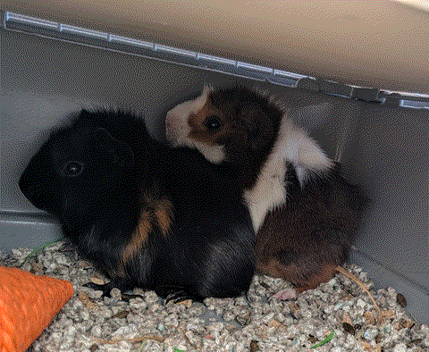

History
This project started as a burst of nostalgia: I keep very fond memories of my 90s experiences with early computers, and the early Internet, and I wanted my kids to be able to experience the same thing. Today's computers don't feel like that: they're slow (even with faster hardware!), full of things you don't need, and basically overwhelming for a kid. The Internet also doesn't feel the same: full of ads and people trying to sell you something or trick you in some way.
I bought a Raspberry Pi 500 for my kids, which included Raspberry Pi OS, and I let them loose. I soon saw that they had trouble with the basics (as expected, it was their first time really using a computer), but there was a mix of essential and accidental complexity. I've been building software for over two decades now, and I like to think I have good taste for UX, so equipped with AI (sorry, this project is written with AI; I don't have the skills to build such a complex system in my free time in a reasonable timeframe) I started a small spike to see if I could do better.
After a few days I had something decent. It ran as an app inside Raspberry Pi OS, which created a bit of friction as my kids had two status bars, but everything looked right. Iteration after iteration, the project kept growing. As of today (November 2026), NoGaOS feels like a real OS, and it's starting to be used in a school. We'll see what the future holds.
The name and the logo
The name of the project comes from my kids' names. The logo comes from our guinea pigs, Bichi and Nit:
